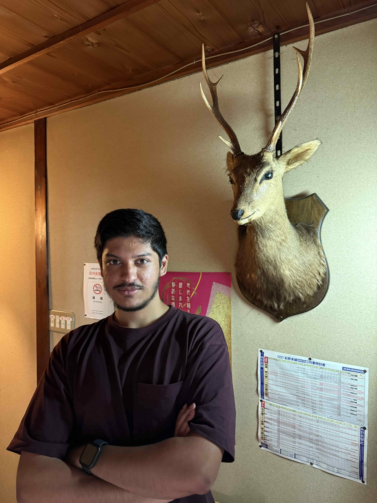
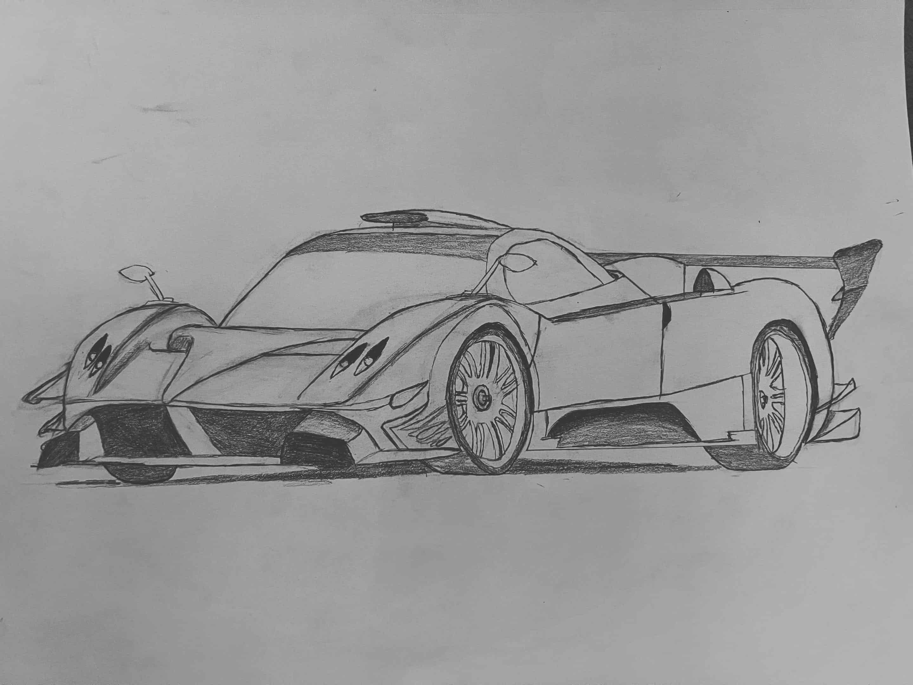

はじめまして、ザイヤ・イクバルと申します。

ザザと呼んでも大丈夫です。ニューヨークのニューハイドパークの出身です。
機械工学を専攻している四年生です。ゲーム、絵、ランニング、筋トレ、アニメ、日本語、折り紙、刺繍 などが好きで、特に手を使う趣味が好きです。

性格については一言で言うと「周りをよく見ること」だと思います。 皮肉なことに周りからなんといわれるかは、あまりわかりません。 謙虚さ、 忍耐、 思いやり、 素直さ、 中庸を大切にしています。 日本語そのものが好きなので勉強しています。将来はエンジニアになりたいですが、日本語やほかのことも大切にしたいです。